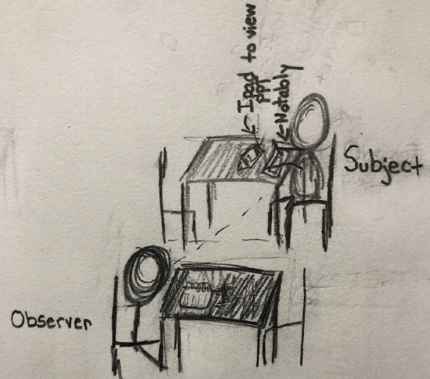
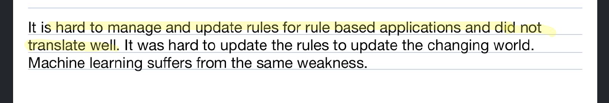

Notably Mobile Application Redesign
UX Designer and Researcher
What is Notably iOS
Notably is a an application that allows users to take handwritten notes using an iPad and Apple Pencil.
I observed users using the popular Notably application as they used an iPad 12.9 and a first generation Apple Pencil. I observed them as they both wrote, drew, and typed their notes.
Problems: Users can not write or change tools using their fingersl they can only use their fingers when interacting with the onscreen keyboard of if they are scrolling through their notes
The iPad, Apple Pencil, and Notably app work together and operate as a substitute for paper, pencil, pen, and highlighter user.
Product Stakeholders
Business Professionals - Business Professionals can use this application to record and organize work-related information.
More specifically, they can take notes in meetings, while on phone calls or emails, create to-do
lists, bullet talking point reminders, draft emails, or similar tasks. The Notably app offers
benefits including that it is an environmentally friendly alternative to using paper and plastic
pens, notes are easy to share with other devices and individuals, and it would be less likely that
notes will be destroyed or lost.
Students - Students will use this app to take notes, capture audio recordings of lectures, organize their notes,
and create to-do lists. This app will help students take, share, organize, and store their notes.
Notably will also allow students to draw and add color to diagrams presented during lectures.
Lecturers/Educators - Lecturers will use this app to take notes for their classes or discussions and to help them
create lists. This app can help educators record grades to allow them to record notes to
self-critique. Finally, this app can also help them create to-do lists.
Home User (Taking Notes for Personal/General Life Use) - Home Users will use the app to accomplish everyday tasks, generally using paper and PostIts,
including writing and sharing grocery lists, to-do lists, drafting emails, and similar tasks.
Writers - Writers will use this app to write their pieces and to create diagrams outlining their plot
progressions, character archetypes, to-do lists, audio record, or write out brainstormed ideas.
Writers can also use this app to send drafts to their computer to type them after handwriting
them.
Digital Artists (Outside of Intended Usage) - Although this is not an intended use of note-taking applications, many artists can use notably to
sketch drawings. Notably serves as an alternative to sketch pads and pencils and pens, and can
allow artists to share their sketches seamlessly without needing to scan them, or use a Wacom
tablet.
Audio Artist (Outside of Intended Usage) - Musicians can use the apps audio record features and write lyrics, sing, or record musical
notation.
Stakeholders Observered
The Stakeholder chosen was a student using the application to digitally write notes from a
PowerPoint in a relatively noisy coffee shop and a quiet and private room in a library. Each
interaction lasted 10 minutes, and we conducted two observations on the same day.
Documentation of Observation
The subject used his iPad to review a PowerPoint, and the subject used my iPad, Apple Pencil,
and Notably app to write notes, and my iPad used a screen recorder to capture every action taken
for review. I sat at the table next to my subject and noted some of his actions. I noted facial
expressions, and various gesture attempts to gain information about their experience. I did not
want to look over my subject’s shoulder as he worked, because I wanted to record genuine and
natural interactions with the device and application. I wanted to give some distance in both
interactions.
In general, the subjects’s facial expressions did not change as the interface is straightforward to
navigate and use, he squinted an occasionally, but this was more to help him concentrate on how
to paraphrase the notes than as a reflection of the app’s difficulty.

Observation 1 took place in a coffee shop.

Observation 2 took place in a private room in a library.

The subject stopped usint the erase function as it was time consuming and laborous to access the erase button and then access the pencil tool.

The subject experiened some difficulty when switching from the keyboard to the highlighter.

When attempting to erase letters, multiple letters were deleted at once if creates from a single stroke. The user is only to erase strokes not
Subject attempted gestures with the touch and pen that are unsupported. All of the attempted gestures were supported for other not taking devices including shortcutes for SmartBoards.
Observational Setting
I observed a single subject twice once in a busy and relatively noisy coffeehouse, and a second
time in a tranquil private library study space with soft classical music playing. Both interactions
lasted 10 minutes, and in Observation 1, the subject had his first experience using an iPad and
Apple pencil to write notes. At the coffee shop, the subject was seated at a small table in a
wooden chair, and I sat facing him at the table to his left. I wanted to see his expressions and
gestures so that I could review his physical actions and expressions later in the screen recorded
video. He had a PowerPoint from one of his courses and took notes on a lesson. He used his iPad
to review the PowerPoint presentation. The second observation took place in a private library
study room; it was just the subject and me. We used the same technologies, and we had soft
classical music playing to make the interaction less uncomfortable. I believed that complete
silence would bring more self-awareness to the fact that he was being studied, and the addition of
music would result in less obstructed data. I sat at the other end of the table about 3 ft away.
Observation 1 took place around 12:50, and Observation 2 took place the same day at 5:30 pm.
Interaction Description
1A) The subject stopped attempting to erase errors after the first attempt. He tried to erase
using the end of the Apple Pencil, which did not work, and the Eraser button is laborious to
access and to reassess the pen tool afterwards. The subject opted to scratch out errors instead
later stating that he would have erased them all at the same time at the end, but did not want to
distract himself from taking notes by needing to access the eraser.
1B) The subject tried to swipe left and right to navigate pages, this functionality is not
available. He did this when trying to review notes, the screen orientation was vertical, as if using
an e-reader.
1C) The subject decided to turn the iPad horizontally to write notes more naturally.
Uniquely making the interaction more intuitive and similar to writing on paper or on a dry erase
board.
2A) The subject attempted to use a SmartBoard eraser shortcut to erase information ie big
circle and swiping through. This gesture did not produce any results
2B) The subject implements a cursive-esque printing style where he combines various
letters in a single stroke. His ligature style of writing made it difficult to erase efficiently because
it would erase chunks of words at a time, as opposed to a single letter.
Davina Wooley
2C) The subject attempted to use the onscreen keyboard. The keyboard works with finger
interaction and Apple Pencil interaction. Two hands were more efficient for typing. After typing
with both hands, he wanted to highlight some of the text using his finger, but the functionality
was unavailable. He had to pick up the Apple Pencil again to highlight a single word before
reaccessing the keyboard to continue typing.
List of Design Implications from Observations that Derived from Observations
1. Page Flipping Option with Animated Transition/ Horizontal Scroll while Reviewing.
2. Easier access to erase option/ possible pen stroke recognition or a larger button. Should
be accessible by touch to decrease time requirement, as opposed to only pen interactions.
3. Add functionality so that the subject does not have to lift the pen from the screen as often.
The entire stroke should not be erased.
4. Easier way to move from integrating touch input, digital keyboard input and Apple Pen
input. You have to take distinct steps to navigate between input types.
Ideation and Lo-Fi Prototyping
Interactive Technology
iOS Notably App, Ipad Pro 2nd Generation & Apple Pencil 1st Generation

Deconstruct the components of the chosen technology product or service. List at least 15
components.
1. Organizing Notes Create Notes Folder - This component of the app allows users to
create new Note Documents within a Folder. The user can select and change the name of
the folder. Note documents get automatically named after the Date and Time that the user
created the document.
2. Organizing Notes Create New Note Page in Folder - When the user clicks the add new
note icon, the app opens a new note page where the user will be able to compose their
notes. The Notes save automatically and can be accessed later by selecting them from
their assigned folder.
3. Return to Folders of Notes' <' Icon - This feature returns the user to the notes and
folders repository. Users can select to review, edit, or create new notes from this
repository screen.
4. Send Notes - This feature allows the user to send their notes to another app via Email,
Dropbox, Save to Google Drive, OneDrive, Box, iTunes, Print, or WebDAV.
5. Undo Button - This button undoes the last completed action, and the undo action can be
pressed repeatedly by pressing the button. This Icon will be able to undo every action
performed in this document. When the undo button greyed out, it means that the user has
undone all possible actions.
6. Text Tool - This tool allows the user to click anywhere on the screen to add their text;
they can then use the built-in on-screen keyboard or an external compatible keyboard.
Users can adjust font sizes, typefaces, font sizes, and make the text bold, italicized, or
underline text. Users can also add bullet points from the text tool. Users can type using
fingers or Apple Pencil.
7. Pencil Tool- Allows users to write, draw, and add color to the document. The user can
change the size of the pencil’s input on the screen.
8. Highlighter - Similar to Pen Tool, yet it is is partially transparent, adding color to the
digital document, and pen tool created elements.
9. Eraser - Allows users to remove on-screen elements added by the Pen Tool.
10. Scissor Tool - Select on-screen elements and move them to another location using the
Apple Pencil Exclusively
11. Hand Tool - Allows users to Scroll with one finger through notes
12. Insert Media Photo ( '+' Icon ) - This allows users to add previously taken images to their
notes document
13. Insert Media Take A Photo ( '+' Icon ) - This tool allows the user to use the iPad's
built-in camera to take a photo. The user can resize the image, and they can place the
photo to the desired location within the opened note document. Photos can be moved and
resized using fingers or the Apple Pencil.
14. Insert Media Figure ('+' Icon) - This tool allows users to Add common Shapes, Lines,
and hand-drawn figures to create diagrams. When the drawing is complete, the user will
select done, and the figure gets added to notes as an image. This diagram/figure can be
edited by tapping on the element and selecting edit
15. Insert Media Add a Web Clip ('+' Icon) - This feature allows the user to surf the web or
insert a URL to a web video that they would like to add a link to in their notes. A
thumbnail of the video is visible and can play when pressed. The user can add a caption
to the video adding additional context to the video significance or context within the body
of their notes.
16. Insert Media Add a Sticky Note ('+' Icon) - This feature allows the user to add sticky
notes to the page. The size of the sticky note is adjustable, and the user can move the note
around the document, The user can select between having blank or ruled sticky notes, and
they can handwrite using the apple pencil or add text directly onto the sticky note. The
text tool functionality is built into the sticky note's presets.
17. Utilities Paper Properties - Change Properties regarding the document's paper or
background appearance; either add lines or grids or change the color and texture of the
paper.
18. Scroll Bar - This Feature notifies the user of what page they are currently viewing and the
total number of pages in the notes document. The user's position is indicated by means on
a fraction 1/2 means that the user is on the first page of a two-page document.
19. Magnify - Users can select the area of the page that they want to magnify, and the
magnified area will appear in a window at the bottom of the screen. The maximum area
that the user can magnify at a time is approximately 1/10th of the note page. The user can
add fine details to the magnified areas.
Generate at least 10 concepts for a redesign of the technology using SCAMPER.
1. Tracing Pad iPad Application (Adapted Features)- Tracing Paper and light board
combination. The user can take a photo and draw or sketch on top of it for reference, and when
done, they can remove the visibility of the initial image. The user will be able to adjust the
visibility of the reference image manually throughout the design process.
2. Speech-to-Note Auto Generator (Adapt)(Prototype 1)- Users can record a speech, and the
system will analyze the audio input and take notes for the user. The text will appear faster than
the user would have been able to write or type them, and the user can highlight, and add media,
as they desire. This will allow the user to pay more attention to the lecture, and worry less about
catching every word. The user can record the lecture directly from an Apple Watch and edit it
from an iPad, or they can record the audio from the iPad itself. A single Notably Account will
link Apple watch and iPad applications, and they will all share notes and recordings
automatically from the time the user begins using adding content. The iPad does not need to be
within close proximity for the system to work. The original design for the Notable App will
remain, just the Apple Watch microphone or the iPad microphone may be populating the content
area. Recording and Note Taking can begin using Siri voice controls, and all information saves
to the Notably cloud.
3. Digital Notebook with animated page-turning and dog-ear features (Adapt) - This will
make the digital notebook seem more like a notebook. The animation will be reminiscent of
turning the physical page, and users can fold the corners of their pages to indicate that the
content is valuable.
1. Tracing Pad iPad Application (Adapted Features)- Tracing Paper and light board
combination. The user can take a photo and draw or sketch on top of it for reference, and when
done, they can remove the visibility of the initial image. The user will be able to adjust the
visibility of the reference image manually throughout the design process.
2. Speech-to-Note Auto Generator (Adapt)(Prototype 1)- Users can record a speech, and the
system will analyze the audio input and take notes for the user. The text will appear faster than
the user would have been able to write or type them, and the user can highlight, and add media,
as they desire. This will allow the user to pay more attention to the lecture, and worry less about
catching every word. The user can record the lecture directly from an Apple Watch and edit it
from an iPad, or they can record the audio from the iPad itself. A single Notably Account will
link Apple watch and iPad applications, and they will all share notes and recordings
automatically from the time the user begins using adding content. The iPad does not need to be
within close proximity for the system to work. The original design for the Notable App will
remain, just the Apple Watch microphone or the iPad microphone may be populating the content
area. Recording and Note Taking can begin using Siri voice controls, and all information saves
to the Notably cloud.
3. Digital Notebook with animated page-turning and dog-ear features (Adapt) - This will
make the digital notebook seem more like a notebook. The animation will be reminiscent of
turning the physical page, and users can fold the corners of their pages to indicate that the
content is valuable.
9. Apple Watch Note Taker ( Adapt and Minimize ) - The user can access an app from the Apple
watch. The watch record the lecture. The audio file can be shared with other devices and
web-based services. The user can title the audio track and listen to the recording at another time,
similar to how they would listen to a podcast or an audiobook.
10. Note Adviser iPad App (Adapt)- App will analyze a user notes- and help the user study.
This app can turn the content into notecards, practice tests, and study guides. This app can
provide helpful metrics regarding whether or not the user comprehends a particular topic, and
offer study and content retention tips.
11- Write Here iPad App (Eliminate) - The user can only write on the screen. They can not add
typed text, images, add colors, adjust utilities, magnify, or erase. They can only write on a white
background, with a black pencil, at a set size.
12- Music Pirating iPhone App ( Put to Another Use ) - Add web videos of your favorite artist,
export video playlist to iTunes and listen to your favorite songs for free, with ads.